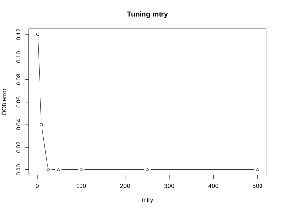
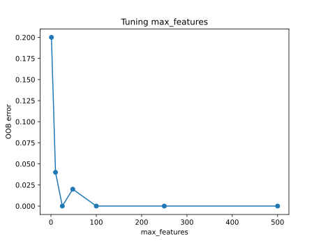

install.packages("randomForest")3 Exercises
3.1 Before you start
These exercises use the Small Round Blue Cell Tumors (SRBCT) dataset. It contains the expression level of 2308 genes measured on 63 tumor biopsies. Each sample belongs to one of four childhood tumor types that are notoriously hard to tell apart under a microscope: Burkitt Lymphoma (BL), Ewing Sarcoma (EWS), neuroblastoma (NB) and rhabdomyosarcoma (RMS). We will train a random forest that distinguishes the four types from gene expression alone, and then ask which genes drive that distinction, both overall and for one tumor type in particular.
Choose either R or Python and follow that language for the entire chapter. Both tracks answer the same questions on the same 63 samples and 2308 genes, but R and Python use different random number generators, so the exact train and test samples, the tuned mtry, and the exact ranking of genes you find can differ slightly between the two. That is expected and does not change the conclusions.
The six exercises are sequential. Each one names the objects it creates, and later exercises reuse those exact objects. Work through them in order, in one R session or one Python session, and keep every named object until the end of Exercise 6.
3.2 Getting the data
Download the file here: srbct.csv, and place it in a data folder next to your script or notebook, so the path below works unchanged.
your-project/
├── analysis.R # or analysis.py / analysis.ipynb
└── data/
└── srbct.csvsrbct.csv has 63 rows, one per tumor sample, and 2309 columns:
- 2308 gene expression predictors, named
g1tog2308. These are continuous values with no missing data. class, the tumor type label. This is the outcome we want to predict, and it has four levels:BL,EWS,NBandRMS.
There is no sample identifier column and no column that is for plotting only. Every column except class is a predictor.
3.3 Packages
python -m pip install pandas scikit-learn matplotlibThe solutions below were produced with R 4.5.3 and randomForest 4.7.1.2, and with Python 3.13.13, scikit-learn 1.9.1, pandas 3.0.6, numpy 2.5.3 and matplotlib 3.11.2. Later package versions may give slightly different numbers.
3.4 Setup
Run this once, at the start of your session. It reads the data and separates the predictors from the outcome.
srbct_data <- read.csv("data/srbct.csv", check.names = FALSE)
x <- srbct_data[, setdiff(names(srbct_data), "class")]
y <- factor(srbct_data$class)import pandas as pd
srbct_data = pd.read_csv("data/srbct.csv")
X = srbct_data.drop(columns=["class"])
y = srbct_data["class"]3.5 Exercise 1. Inspect the data and create a stratified split
Before fitting anything, we always set aside part of the data and never look at it again until the model is finished. This held out test set is what lets us check, honestly and only once, how well the model works on samples it has never seen. Everything we do before that point, including fitting the model and choosing its settings, must use only the remaining training data.
With only 63 samples spread across four classes, and only 8 samples in the smallest class, an ordinary random split could easily leave a class with very few, or even zero, test samples. A stratified split takes the training and test samples separately within each class, so every class keeps roughly the same proportion in both sets.
Task
- Confirm that
x/Xhas 63 rows and 2308 columns, and that it contains no missing values. - Report how many samples belong to each of the four classes.
- Create a stratified 80 percent training and 20 percent test split, using seed
1. Store the result asx_train,y_train,x_testandy_test(R) orX_train,y_train,X_testandy_test(Python). - Verify that the class counts in the training and test sets add up to the original class counts, and that no sample appears in both sets.
TipTip
In R, split() groups row indices by class so that you can sample separately within each group. In Python, train_test_split does this for you directly through its stratify argument. Keep all four objects from this exercise. They are reused in every exercise that follows.
NoteSolution
dim(x)
anyNA(x)
table(y)
set.seed(1)
train_id <- unlist(lapply(split(seq_len(nrow(x)), y), function(idx) {
sample(idx, size = round(0.8 * length(idx)))
}))
train_id <- sort(train_id)
test_id <- setdiff(seq_len(nrow(x)), train_id)
x_train <- x[train_id, ]
y_train <- y[train_id]
x_test <- x[test_id, ]
y_test <- y[test_id]
rbind(train = table(y_train), test = table(y_test))
length(train_id) + length(test_id) == nrow(x)
length(intersect(train_id, test_id))[1] 63 2308
[1] FALSE
BL EWS NB RMS
8 23 12 20
BL EWS NB RMS
train 6 18 10 16
test 2 5 2 4
[1] TRUE
[1] 0from sklearn.model_selection import train_test_split
print(X.shape)
print(X.isna().any().any())
print(y.value_counts())
X_train, X_test, y_train, y_test = train_test_split(
X, y, test_size=0.2, stratify=y, random_state=1
)
print(pd.DataFrame({"train": y_train.value_counts(), "test": y_test.value_counts()}))
print(len(X_train) + len(X_test) == len(X))(63, 2308)
False
class
EWS 23
RMS 20
NB 12
BL 8
Name: count, dtype: int64
train test
class
EWS 18 5
RMS 16 4
NB 10 2
BL 6 2
TrueEven with stratification, the test set is tiny, only 13 samples, and the smallest class (BL) has just 2 of them. A single misclassified sample later will move the test accuracy by several percentage points, so keep that in mind when you interpret results in the next exercises.
3.6 Exercise 2. Fit a first random forest
Continue with x_train/X_train and y_train from Exercise 1.
A random forest grows many decision trees, each one on its own bootstrap sample of the training data, a random sample taken with replacement. Because of that, any single tree only ever sees around two thirds of the training samples on average. Predicting the remaining ones, the out-of-bag (OOB) samples, with the trees that never saw them gives a built-in estimate of error, without needing a separate validation set.
At every split, each tree is also only allowed to choose from a random subset of the genes, rather than all 2308 of them. The size of that subset is a setting called mtry in R and max_features in Python. Let’s start with the smallest possible value, mtry = 1, so that only a single random gene is available at every split, and see how the forest performs.
Task
Fit a random forest on the training data with mtry = 1 and ntree = 500. Store it as rf_baseline, and report its OOB error rate.
TipTip
A fitted randomForest object in R stores its OOB predictions directly in fit$predicted. In Python, pass oob_score=True when creating the RandomForestClassifier, and read the error off 1 - rf.oob_score_ after fitting.
NoteSolution
set.seed(1)
rf_baseline <- randomForest::randomForest(x_train, y_train, mtry = 1, ntree = 500)
rf_baseline
Call:
randomForest(x = x_train, y = y_train, ntree = 500, mtry = 1)
Type of random forest: classification
Number of trees: 500
No. of variables tried at each split: 1
OOB estimate of error rate: 12%
Confusion matrix:
BL EWS NB RMS class.error
BL 5 1 0 0 0.17
EWS 0 17 0 1 0.06
NB 0 1 9 0 0.10
RMS 0 3 0 13 0.19from sklearn.ensemble import RandomForestClassifier
rf_baseline = RandomForestClassifier(n_estimators=500, max_features=1,
oob_score=True, random_state=1)
rf_baseline.fit(X_train, y_train)
print(f"OOB estimate of error rate: {1 - rf_baseline.oob_score_:.1%}")OOB estimate of error rate: 20.0%With only one random gene available at every split, the OOB error rate is quite high, 12 percent in R and 20 percent in Python. Each tree has so little information to work with that many of its splits are weak, and averaging 500 such trees only partly makes up for that. Let’s see next whether a larger mtry does better.
3.7 Exercise 3. Tune mtry using out-of-bag error
Continue with x_train/X_train and y_train from Exercise 1. Do not use the test set in this exercise.
mtry is a hyperparameter, a setting we choose before fitting the forest rather than something the algorithm learns by itself. Exercise 2 showed that a small mtry can hurt performance, so it is worth trying a range of values and keeping the one that does best. Because OOB error already gives us an honest performance estimate without touching the test set, it is a convenient tool for comparing hyperparameter settings, not only for checking one final model.
Task
- For each value of
mtryin1, 10, 25, 48, 100, 250, 500, fit a random forest on the training data with 500 trees, and record its OOB error rate. The defaultmtryfor classification is the square root of the number of predictors, which here is about 48, so this range covers the default as well as values well below and above it. - Plot OOB error against
mtry. - Store the
mtrywith the lowest OOB error asbest_mtry.
TipTip
Fit every candidate model on the training set only, exactly as in Exercise 2. The value mtry = 1 should reproduce the OOB error you already found for rf_baseline.
NoteSolution
mtry_grid <- c(1, 10, 25, 48, 100, 250, 500)
oob_error <- numeric(length(mtry_grid))
for (i in seq_along(mtry_grid)) {
set.seed(1)
fit <- randomForest::randomForest(x_train, y_train, mtry = mtry_grid[i], ntree = 500)
oob_error[i] <- mean(fit$predicted != y_train)
}
tune_result <- data.frame(mtry = mtry_grid, oob_error = oob_error)
tune_result
plot(tune_result$mtry, tune_result$oob_error, type = "b",
xlab = "mtry", ylab = "OOB error", main = "Tuning mtry")
best_mtry <- tune_result$mtry[which.min(tune_result$oob_error)]
best_mtry mtry oob_error
1 1 0.12
2 10 0.04
3 25 0.00
4 48 0.00
5 100 0.00
6 250 0.00
7 500 0.00
[1] 25
import matplotlib.pyplot as plt
mtry_grid = [1, 10, 25, 48, 100, 250, 500]
oob_errors = []
for mf in mtry_grid:
rf = RandomForestClassifier(n_estimators=500, max_features=mf,
oob_score=True, random_state=1)
rf.fit(X_train, y_train)
oob_errors.append(1 - rf.oob_score_)
tune_result = pd.DataFrame({"mtry": mtry_grid, "oob_error": oob_errors})
print(tune_result)
plt.plot(tune_result["mtry"], tune_result["oob_error"], marker="o")
plt.xlabel("max_features")
plt.ylabel("OOB error")
plt.title("Tuning max_features")
plt.show()
best_mtry = int(tune_result.loc[tune_result["oob_error"].idxmin(), "mtry"])
best_mtry mtry oob_error
0 1 0.20
1 10 0.04
2 25 0.00
3 48 0.02
4 100 0.00
5 250 0.00
6 500 0.00
25
Moving mtry away from 1 brings a large and immediate improvement, and OOB error then stays low across a wide range of larger values, including the default of 48. With this many genes and this few samples, the classes are already easy to separate once mtry is large enough, so several values reach, or come close to, 0 percent OOB error. In this situation it makes sense to keep the smallest mtry among the best performing ones, 25, rather than the largest. A smaller mtry keeps the trees more different from one another, which is the whole point of the random part of a random forest, and it is cheaper to compute. best_mtry is used to fit the final model in the next exercise.
3.8 Exercise 4. Fit the final model and evaluate it on the test set
Continue with x_train/X_train, y_train, x_test/X_test, y_test and best_mtry from the previous exercises.
So far, every number we have looked at came from OOB error, computed internally from the training data. It is now time to check performance on the test set we set aside in Exercise 1 and have not touched since. This is the one honest, unbiased look we get at how the model handles samples it was never trained on, which is why it is important not to use it earlier, for example to help choose mtry.
Task
- Fit a random forest on the training data using
best_mtryand 500 trees, with importance scores enabled. Store it asrf_model. Report its OOB error rate and OOB confusion matrix. - Use
rf_modelto predict the test set. Report the confusion matrix and the overall accuracy. In a confusion matrix, rows and columns represent predicted and true classes, and a perfect model would have every sample on the diagonal, where predicted and true class agree. - Compare the OOB error from step 1 with the test error from step 2, and decide whether the OOB estimate was a reasonable preview of test performance here.
TipTip
This is the first and only time you touch y_test in this chapter. Everything before this exercise, including the choice of best_mtry, was decided using the training data alone.
NoteSolution
set.seed(1)
rf_model <- randomForest::randomForest(x_train, y_train, mtry = best_mtry,
ntree = 500, importance = TRUE)
rf_model
pred_test <- predict(rf_model, x_test)
table(predicted = pred_test, true = y_test)
mean(pred_test == y_test)
Call:
randomForest(x = x_train, y = y_train, ntree = 500, mtry = best_mtry, importance = TRUE)
Type of random forest: classification
Number of trees: 500
No. of variables tried at each split: 25
OOB estimate of error rate: 2%
Confusion matrix:
BL EWS NB RMS class.error
BL 6 0 0 0 0.0
EWS 0 18 0 0 0.0
NB 0 0 9 1 0.1
RMS 0 0 0 16 0.0
true
predicted BL EWS NB RMS
BL 2 0 0 0
EWS 0 5 0 0
NB 0 0 2 0
RMS 0 0 0 4
[1] 1from sklearn.metrics import confusion_matrix, accuracy_score
rf_model = RandomForestClassifier(n_estimators=500, max_features=best_mtry,
oob_score=True, random_state=1)
rf_model.fit(X_train, y_train)
print(f"OOB estimate of error rate: {1 - rf_model.oob_score_:.1%}")
pred_test = rf_model.predict(X_test)
print(pd.DataFrame(confusion_matrix(y_test, pred_test, labels=rf_model.classes_),
index=rf_model.classes_, columns=rf_model.classes_))
print(accuracy_score(y_test, pred_test))OOB estimate of error rate: 0.0%
BL EWS NB RMS
BL 2 0 0 0
EWS 0 5 0 0
NB 0 0 2 0
RMS 0 0 0 4
1.0Both tracks classify every test sample correctly. The OOB error from the training data, around 0 to 2 percent, was already a good preview of this, which is exactly the point of using OOB error instead of a separate validation set when samples are scarce. At the same time, a perfect score on 13 test samples, one tumor type represented by only 2 of them, should not be read as proof that this model works on any new SRBCT sample. It shows that these particular genes separate these particular tumor types very cleanly in this dataset, which is a well known property of this classic benchmark.
3.9 Exercise 5. Find the genes that matter most overall
Continue with rf_model from Exercise 4.
Once a forest fits well, a natural next question is which predictors it actually relies on, since with 2308 genes and only a handful that likely matter, finding them is often more useful than the classifier itself. The most direct way to measure this is to take one gene at a time, randomly shuffle its values across the test samples so that it no longer carries real information, and see how much the model’s performance drops. A gene the model depends on heavily will hurt performance a lot when scrambled like this, while a gene it barely uses will hardly matter. Averaged over many repeats, this gives each gene a score called the mean decrease in accuracy.
Task
- For every gene, estimate how much the model’s performance drops when that gene is randomly shuffled.
- Report the 10 genes with the largest mean decrease in accuracy. Store them as
top10_overall.
TipTip
R’s randomForest::importance() computes the mean decrease in accuracy for you directly, as one of its columns, since it already permutes each OOB sample internally while the forest is being trained.
scikit-learn has no equivalent built into the model itself. Use sklearn.inspection.permutation_importance on the test set instead, which does the shuffling and re-scoring for you. Running it on all 2308 genes is slow and mostly wasted, since only a handful are likely to matter. Narrow down to a shortlist of 100 candidate genes first, using the forest’s fast, built-in impurity score (feature_importances_), refit a forest on just that shortlist, and run the permutation importance only there. Because the model already classifies the test set almost perfectly, measure the drop in the model’s confidence for the correct class rather than a plain right or wrong count, since a confidence score keeps changing even once the predictions themselves stop flipping.
NoteSolution
imp <- randomForest::importance(rf_model)
top10_overall <- rownames(imp)[order(imp[, "MeanDecreaseAccuracy"], decreasing = TRUE)][1:10]
round(imp[top10_overall, "MeanDecreaseAccuracy"], 2)g1389 g1645 g2146 g1003 g2050 g246 g129 g1954 g2046 g1706
3.76 3.70 3.65 3.08 2.91 2.90 2.82 2.73 2.70 2.69import numpy as np
from sklearn.inspection import permutation_importance
def true_class_confidence(estimator, X, y):
# Average predicted probability assigned to each sample's true class.
proba = estimator.predict_proba(X)
class_index = {c: i for i, c in enumerate(estimator.classes_)}
true_idx = [class_index[label] for label in y]
return proba[np.arange(len(y)), true_idx].mean()
# Permuting all 2308 genes is too slow, so narrow down to a shortlist first
# using the forest's fast, built-in impurity-based score.
quick_screen = pd.Series(rf_model.feature_importances_, index=X_train.columns)
candidate_genes = quick_screen.sort_values(ascending=False).head(100).index.tolist()
rf_candidates = RandomForestClassifier(n_estimators=500, random_state=1)
rf_candidates.fit(X_train[candidate_genes], y_train)
perm_overall = permutation_importance(rf_candidates, X_test[candidate_genes], y_test,
scoring=true_class_confidence,
n_repeats=20, random_state=1, n_jobs=-1)
importance_all = pd.Series(perm_overall.importances_mean, index=candidate_genes)
top10_overall = importance_all.sort_values(ascending=False).head(10)
top10_overall.round(4)g1003 0.0338
g1389 0.0326
g246 0.0322
g2050 0.0294
g545 0.0284
g1954 0.0234
g509 0.0203
g1955 0.0196
g187 0.0137
g1194 0.0132R computes the mean decrease in accuracy from the out-of-bag samples seen during training, while here it is computed by shuffling genes in the held out test set afterwards, so some difference between the two lists is expected on top of the usual difference from training on different splits. They still overlap substantially (g1389, g1003, g2050, g246 and g1954 appear in both), and more importantly they tell the same story, a handful of genes carry most of the discriminative signal while the remaining few thousand contribute very little. This is typical of small sample, high dimensional gene expression data.
3.10 Exercise 6. Find the genes that matter most for Ewing sarcoma specifically
Continue with rf_model from Exercise 4 and, for Python, with rf_candidates and candidate_genes from Exercise 5.
A gene that matters overall is not necessarily the gene that distinguishes one particular tumor type from the rest. The mean decrease in accuracy can also be computed one class at a time, by checking how much the model’s performance on that class specifically drops when a gene is shuffled, instead of averaging the drop across all four classes together.
Task
Find the 10 genes with the largest mean decrease in accuracy for the EWS class specifically, and store them as top10_ews.
TipTip
In R, randomForest::importance() already returns one column per class alongside the overall MeanDecreaseAccuracy column. Pick the EWS column directly.
In Python, reuse rf_candidates and candidate_genes from Exercise 5 rather than refitting, and write a scoring function for permutation_importance that only looks at the model’s confidence for the samples that are truly EWS, instead of for all test samples.
NoteSolution
imp <- randomForest::importance(rf_model)
top10_ews <- rownames(imp)[order(imp[, "EWS"], decreasing = TRUE)][1:10]
round(imp[top10_ews, "EWS"], 2)g1645 g1389 g2050 g1954 g246 g1706 g1319 g368 g188 g1708
3.77 3.73 3.06 2.96 2.95 2.75 2.72 2.56 2.52 2.48def ews_confidence(estimator, X, y):
# Average predicted probability of the EWS class, among samples that are
# truly EWS.
proba = estimator.predict_proba(X)
ews_col = list(estimator.classes_).index("EWS")
is_ews = (y == "EWS").to_numpy()
return proba[is_ews, ews_col].mean()
perm_ews = permutation_importance(rf_candidates, X_test[candidate_genes], y_test,
scoring=ews_confidence, n_repeats=20,
random_state=1, n_jobs=-1)
importance_ews = pd.Series(perm_ews.importances_mean, index=candidate_genes)
top10_ews = importance_ews.sort_values(ascending=False).head(10)
top10_ews.round(4)g246 0.0495
g1389 0.0479
g545 0.0452
g2050 0.0439
g1954 0.0343
g1003 0.0187
g566 0.0147
g1708 0.0129
g1319 0.0120
g1645 0.0117Most genes on this EWS-specific list already appeared in the overall top 10 from Exercise 5, which makes sense since EWS is the largest class and therefore has a big influence on the overall score too. A few genes stand out here that were not in the overall list at all, for example g1319 and g1708 in R, or g566 and g1319 in Python. These are genes whose main contribution is telling EWS apart from the other three types specifically, even if they are not among the most useful genes for the classification problem as a whole. This is the kind of finding you would take forward as a candidate for further validation, not as a confirmed biological result on its own.